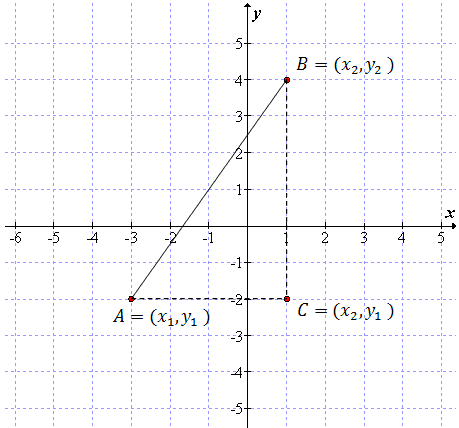

Długość odcinka o końcach w punktach \(A=(x_1,y_1)\) oraz \(B=(x_2,y_2)\) wyraża
się wzorem:
\[|AB|=\sqrt{(x_2-x_1)^2+(y_2-y_1)^2}\] 
Wzór na długość odcinka można wyprowadzić z twierdzenia Pitagorasa dla trójkąta
prostokątnego \(ABC\):
\[\begin{split} |AB|^2&=|AC|^2+|BC|^2\\[6pt]
|AB|&=\sqrt{|AC|^2+|BC|^2}\\[6pt] |AB|&=\sqrt{(x_2-x_1)^2+(y_2-y_1)^2} \end{split}\]